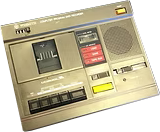
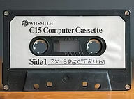
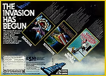
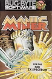
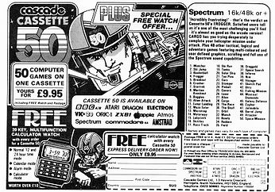

1983 - The Invasion has Begun
Taken from zxgoldenyears.org — written by R. Tayler
1983 was to be Sinclair’s finest hour. After struggling to meet the Christmas demand, sufficient Spectrums were reaching the shops, and by March 200,000 units had been sold. The company was valued at £136m with profits standing at £13.8m, prompting Clive Sinclair to sell off 10% of his personal shareholding. In May, at the height of the Spectrum’s demand, prices were slashed to £99.95 for the 16K model and £129.95 for the 48K. The ZX81 was dropped to £39.95, as was the ZX Printer. The competition was thrown into disarray and wavering buyers were won over. To complete a memorable year for Clive Sinclair, he received a knighthood in the Queen's Birthday Honours.
The Spectrum's price-cut was especially hard on Acorn and its forthcoming Electron computer. Acorn had been kicking the Electron’s launch date down the road for the best part of a year, and it was eventually unveiled in August 1983, priced at £199. Production problems meant that most orders weren't fulfilled until the following year, by which time the Electron had gained a reputation as a de-tuned BBC Micro (it replaced the underachieving Model A). Lukewarm reviews, 1984’s industry downturn, and that Spectrum price cut meant the Electron never troubled Sinclair’s dominance.
With profits soaring, Sinclair focused on developing fresh products: a flat-screen TV, the C5 electric car and another computer. Stories about Sinclair's next home micro - the so called ZX84 - began to circulate in the press. The ZX84 tag was attributed to two Sinclair designs: the prototype that would eventually become the QL, and the LC-3, an abandoned Super Spectrum concept. While the QL ultimately proved to be a millstone around the company's neck, the decision not to pursue the LC-3 was one Sinclair would come to rue. Although it would have used the same processor as the Spectrum, the plan was for it to have a double-mapped screen - requiring less memory and processing power to display images - and an integral Microdrive. With the added advantage of being cheaper than the competition (the LC stood for low cost), it was bound to have been a winner.
The aforementioned Microdrive was symptomatic of Sinclair's habit of missing a trick and neglecting his customers' needs - a habit that would eventually be his undoing. Audio cassettes were already established as a cheap, effective storage solution, and a number of computer manufacturers had wisely produced their own players (in fact, the VIC-20 was only compatible with its Commodore-issue model). Not Sinclair, though, who eschewed this opportunity in favour of the Microdrive: a compact, tape-based cartridge that proved unreliable, unpopular and expensive.

Many tape decks of the time, with their various bells and whistles, tended to baffle the Spectrum's sensitive ear, so owners turned to obsolescent 'shoebox' style cassette recorders for loading and recording software. WH Smith, spotting a gap in the market, snapped up some devalued stock of tape players from the Far East, added its logo, and shifted 100,000 'Data Recorders' in eighteen months.
Pirates Ahoy!
Audio cassettes may have been cheap and convenient storage solution, but they made home copying absurdly easy. A twin-deck hi-fi, or two tape recorders linked by the Spectrum’s own data cable, was all the equipment needed. The Guild of Software Houses claimed that by 1984 piracy was costing the industry £100 million a year. A survey by Crash magazine in November of that year found that 94% of readers owned illegal copies of games. Imagine Software estimated that for every original tape sold, seven copies were being made.
The industry hit back with a series of increasingly elaborate anti-piracy techniques, such as coloured code tables (pirates simply reproduced them by hand), the Lenslok (an infuriating plastic prism that unscrambled an on-screen pass code), and ‘turboloaders’, which used high-speed recordings that couldn't be copied without a critical loss of quality (they could). Even the most sophisticated systems could be bypassed using Romantic Robot's Multiface peripheral, which enabled a snapshot of the Spectrum's memory to be saved to tape - ostensibly for backup or gamesave purposes.

Apart from a few shady characters selling copied games at markets, fairs and even via small ads (amid much finger-pointing in the computer press), piracy was not done for financial gain; it was simply how schoolboys on limited budgets satisfied their hunger for new software and did friends a favour. Illicit though it was, it gave an audience to titles that would otherwise have been overlooked, fed the appetites of gamers, and kept them hooked on the computer scene - which arguably aided software sales in the long run.
Peripheral Vision
Romantic Robot's Multiface was just one of a number of peripherals available for the Spectrum, which ranged from the idiosyncratic to the indispensable. DK'Tronics' Light Pen was more of an interesting curio than a useful accessory, while Currah's MicroSpeech produced an effective synthesized voice but wasn't widely supported by programmers. Sinclair's ZX Printer was a quirky contraption originally built for the ZX81 that burnt text and images onto aluminium-coated paper (or 'astronaut's bog roll', as it was affectionately known). It offered Spectrum owners a cheap and serviceable printing solution, providing they could live with its compromises.
By far the most popular hardware add-ons were joystick interfaces, such as those made by Kempston, Protek, AGF, Fuller and Sinclair itself. These devices housed ports for game controllers and slotted onto the Spectrum's rear expansion connector. Some offered additional features, such as the Fuller Audio Box, which boosted the Spectrum's feeble audio output using a speaker and the Yamaha sound chip later found on the Spectrum +2. Sinclair's Interface 2 accommodated ROM cartridges, although only ten titles were released in this format due to their expense and paltry 16K capacity. Protek's and AGF's interfaces were mapped to the cursor keys, so they could be used on games that didn't support joysticks but allowed playing keys to be redefined.
For several years, games tended to feature of choice of compatable joystick interfaces, although Kempston eventually emerged as the market leader, and established itself as the standard format until the arrival of the Spectrum +2, with its integral joystick ports.
The Invasion has Begun
Sinclair's missteps did little to dent his success, and computing in general enjoyed a halcyon year and an elevated profile, confirming its transformation from obscure hobby to mainstream interest. Even Hollywood got in on the action via hit movie WarGames, starring Matthew Broderick as a hacker who nearly starts World War Three from his home computer (an IMSAI 8080, to be precise).
On the software front, 1983 was the year things really took off. Fledgling companies that had started in bedrooms blossomed into professional programming teams. Before their expertise and advertising budgets began to tell, these embryonic software houses co-existed with one-man-bands hawking their games through mail order and local shops. The result was a blizzard of software, some good, much awful, but most of it demonstrating the experimental enthusiasm of people developing their skills, toying with genres and testing the Spectrum's capabilities.

There was still little idea of what constituted good software, and the abundance of spend-happy gamers eager to lay their hands on whatever they could soon came to the attention of high street stores, who started stocking games alongside hardware. From the mire of amateur bilge, some quality titles began to emerge. Melbourne House established itself as a major player with releases such as The Hobbit, a graphical adventure, and Penetrator, a conversion of the Konami arcade classic Scramble. In the computer press, labels like Anirog, Rabbit, Softek and New Generation were beginning to advertise Spectrum software, while MC Lothlorien made a name for itself as the wargaming king. Meanwhile, Imagine commissioned full-colour, five page ads declaring ‘The Invasion Has Begun’.
Kids weaned in the arcades were bringing the action that had cost them 10 pence a time into their homes. What’s more, computers were teaching them that gaming wasn’t just about shooting aliens. Beyond conversions of arcade favourites, there were strategies and adventures that distinguished the home computer as a more involving medium than any coin-operated machine.
Amid all the hype and bluster, one software house slipped quietly onto the scene with titles of the highest quality. Ultimate's four titles from 1983 – Jetpac, Pssst, Cookie and Tranz Am – were graphically slick and highly playable. All four would play on a 16K Spectrum, while other companies were using twice the memory to create far inferior games.
Labels that had been on the scene since the days of the ZX81 continued to come up with the goods. Quicksilva’s releases included Timegate, which reworked the old Star Trek theme, the frustrating and addictive Mined Out, and the adventure Velnor’s Lair.

The undoubted highlight for Bug Byte was its discovery of a young programmer called Matthew Smith, who gave them Manic Miner, an adaptation of Atari 800 platformer Miner 2049er. Featuring the now-iconic Miner Willy, it became a genre benchmark and an enduring 8-bit favourite. By the end of the year, Smith had left Bug Byte with Alan Maton to form Software Projects, but an ambiguous clause in his contract prevented him from taking Manic Miner along for the ride. Bug Byte eventually relented, enabling Smith to re-publish the game under his new label, but he could do nothing about the 40,000 copies Bug Byte still had in stock, leading to it appearing in the charts under both labels simultaneously.
A new company called Incentive lived up to its name by offering a £500 prize for the first person to complete its maze game Splat! This concept was taken to new heights a year later when Domark offered £25,000 for the first player to solve its adventure Eureka. Another eye-catching gimmick came from Cascade and its Cassette 50, a compilation tape that achieved notoriety and something of a cult following due to its awfulness. It started life on the Apple II, with all bar one of its fifty games programmed by creator Guy Wilhelmy, and was quickly ported to other popular computers. By the time of its conversion to the Spectrum, contributions were being accepted from home programmers in exchange for £10 and the rights to their games.

Cassette 50 was regularly updated and extensively advertised (for a remarkable five years), with the promise of a free digital calculator watch for every buyer. Despite only being available via mail order, and notwithstanding the low quality of its contents, it sold by the thousand. At one point, Cascade was taking up the entire capacity of a watch factory in Hong Kong, and Cassette 50's success provided the £40,000 development costs of A.C.E., its hit flight simulator released in 1985.
Making less of a noise in 1983 was Spectrum Software, which, after a quiet start, changed its name to Ocean and began its steady, calculated conquest of the market. Exploiting the new games frenzy, Imagine finished the year in a stronger position than most. Its exaggerated claims, colourful ads and clever PR had a persuasive effect on a public still starry-eyed at the industry’s pace of change.